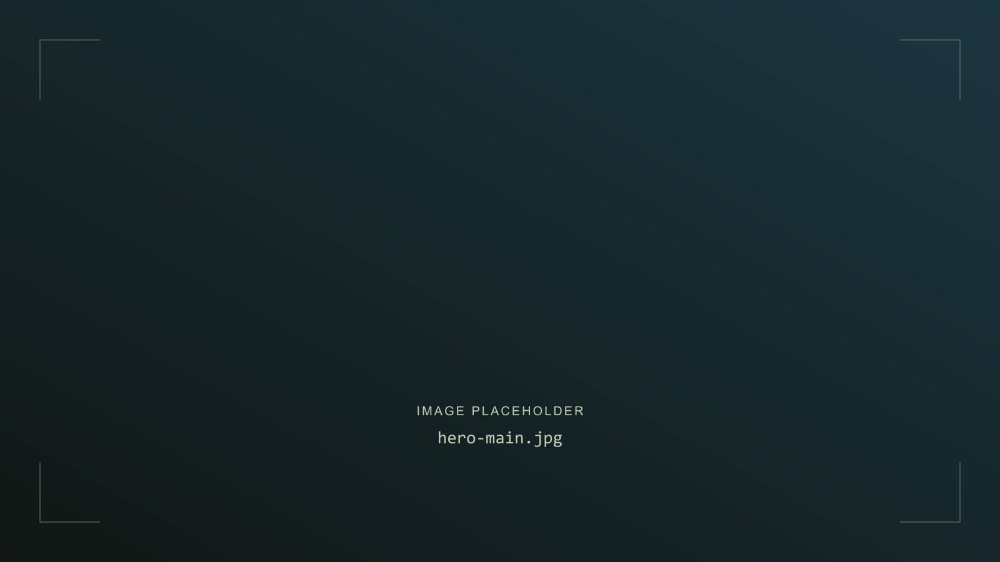
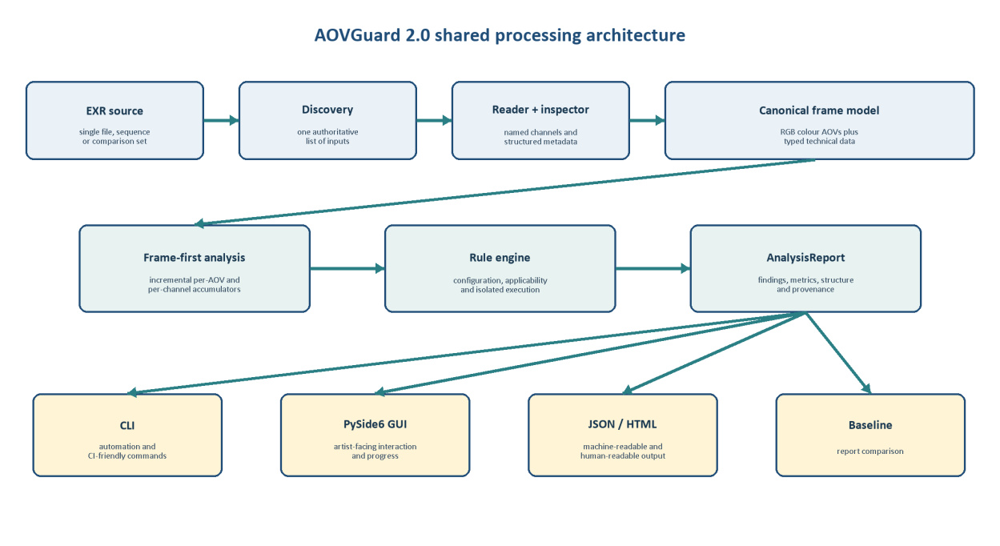
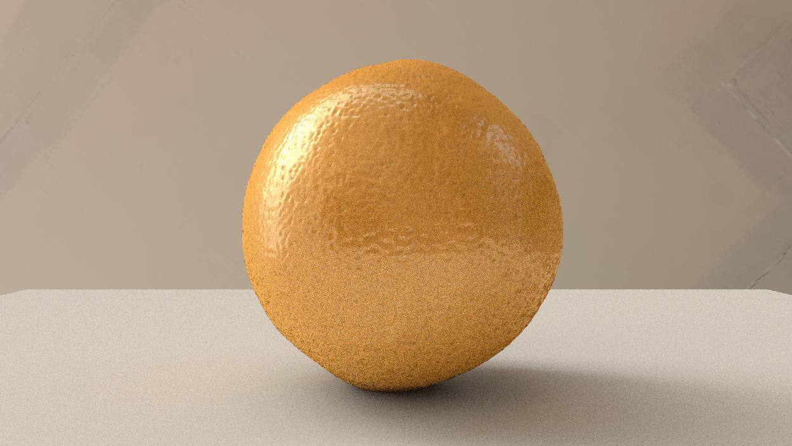

MSc Computer Animation & Visual Effects
Bournemouth University
Relevant study areas
- Animation Software Engineering
- CGI Tools & CGI Techniques
- Simulation and Rendering
- Pipeline and Technical Direction
- Group Project & Industry Brief
- Master's Project

LIGHTING · LOOK DEVELOPMENT · VFX
Lighting Artist | Pipeline TD | VFX Artist
Cinematic images, shaped by light.
Artistic vision. Technical understanding.
LIGHT. COMPOSITION. STORY.
SCROLL TO EXPLORE01 / IN MOTION
Lighting, look development
and visual effects.
Roles, collaborators and asset credits will be listed for each individual shot.
02 / SELECTED PROJECTS
The images I create.
The processes that support them.

PIPELINE DEVELOPMENTAutomated EXR & AOV validation for lighting and compositing.
Python · OpenEXR · NumPy · PySide6
 LIGHTING & LOOK DEVELOPMENT
LIGHTING & LOOK DEVELOPMENT
Broken Horizons — lighting, cinematography and rendering for a group cinematic.
Unreal Engine · Lumen · Movie Render Queue
 FX & SIMULATION
FX & SIMULATION
Ship–water interaction, from a FLIP region to an open ocean.
Houdini · FLIP · Solaris · Karma

LIGHTING & RENDERINGExploring realism through surface detail, materials and light.
Python · RenderMan · RIB · HDRI
03 / ABOUT ME
I'm Joshua, a Lighting Artist, Pipeline TD and VFX Artist with a background in cinematography, computer graphics and software development.
Working as an Assistant Cinematographer / Assistant DoP on film productions in Mexico shaped how I approach light, composition, colour and storytelling.
I specialised in CG lighting at Lost Boys | School of VFX, then continued into rendering, simulation and pipeline development through my MSc at Bournemouth University. I enjoy creating cinematic images while understanding and improving the systems behind them.
Junior Lighting Artist · Lighting TD · Lighting & Compositing Artist · Pipeline TD · Assistant Technical Director / ATD · Technical Artist
04 / THE TOOLKIT
Light, materials and the final frame.
Simulation, assembly and rendering.
Tools that support artists.
05 / THE FOUNDATION
Bournemouth University
Lost Boys | School of VFX
Six-month specialised programme · Katana · Arnold · Nuke
Universidad Autónoma de Guadalajara (UAG)
06 / GET IN TOUCH
For lighting, VFX and pipeline opportunities.